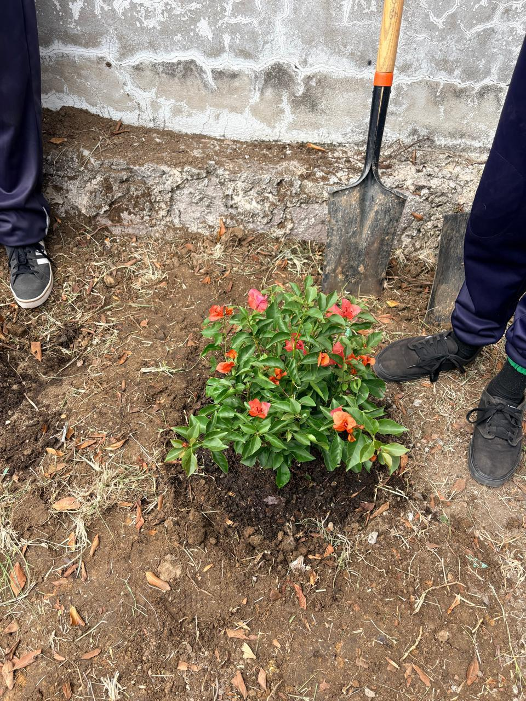
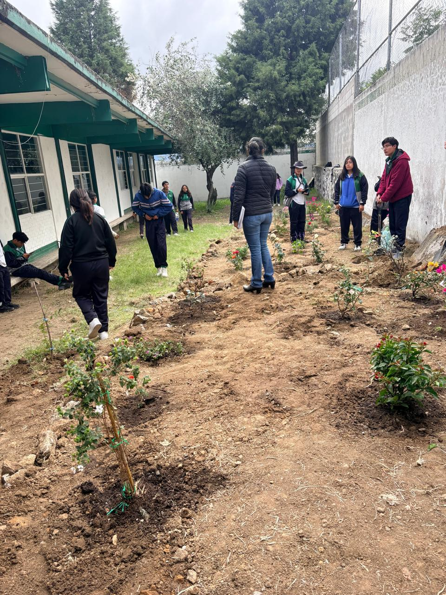
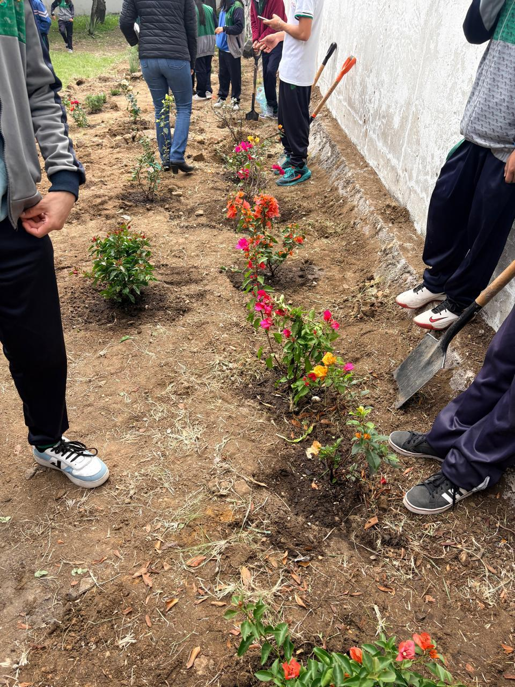
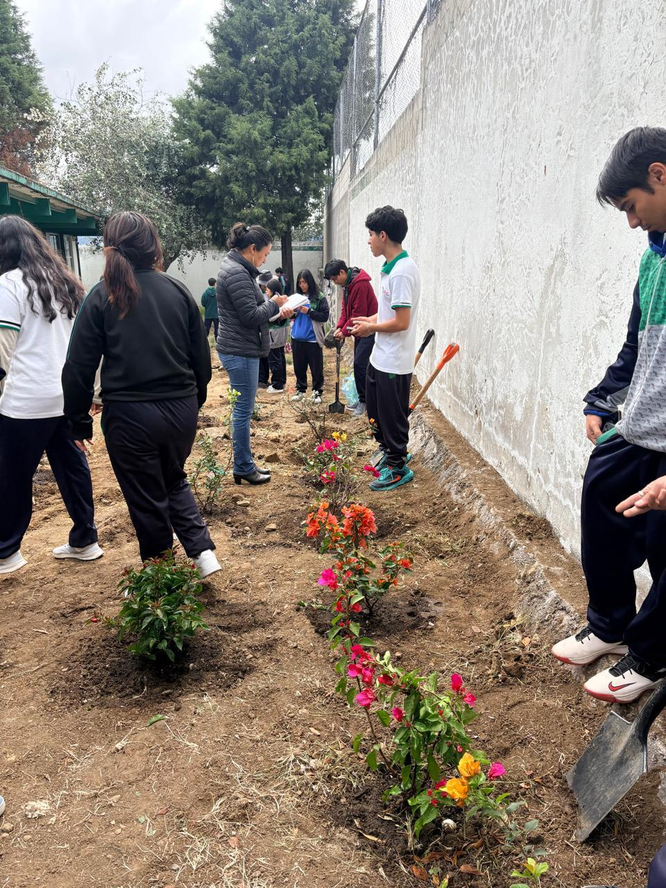
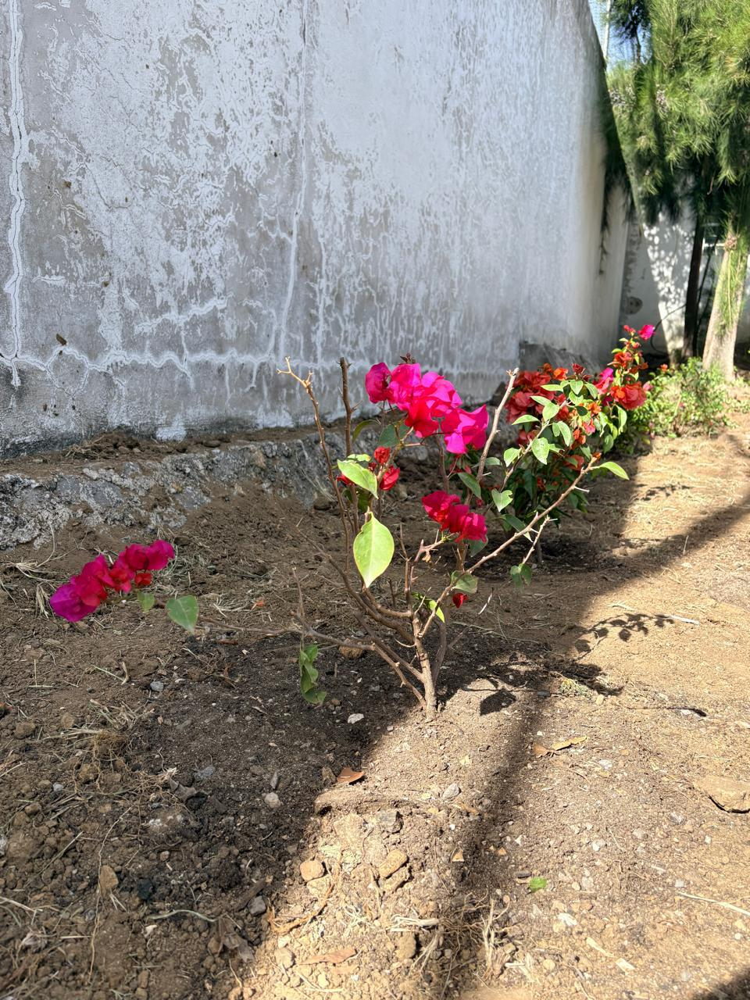
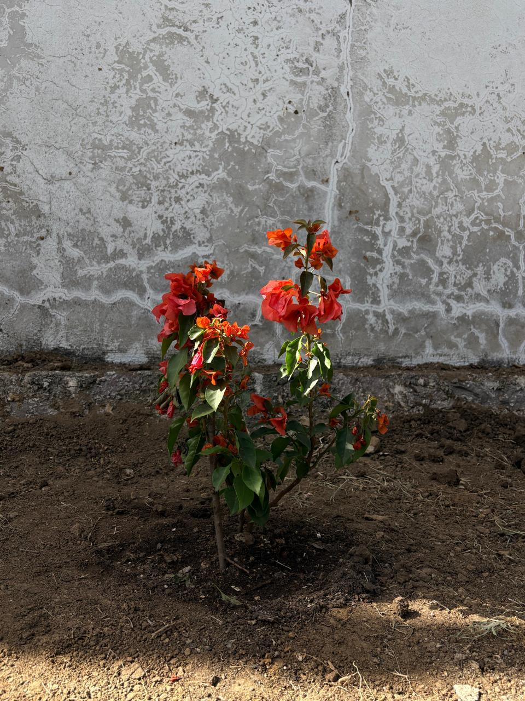
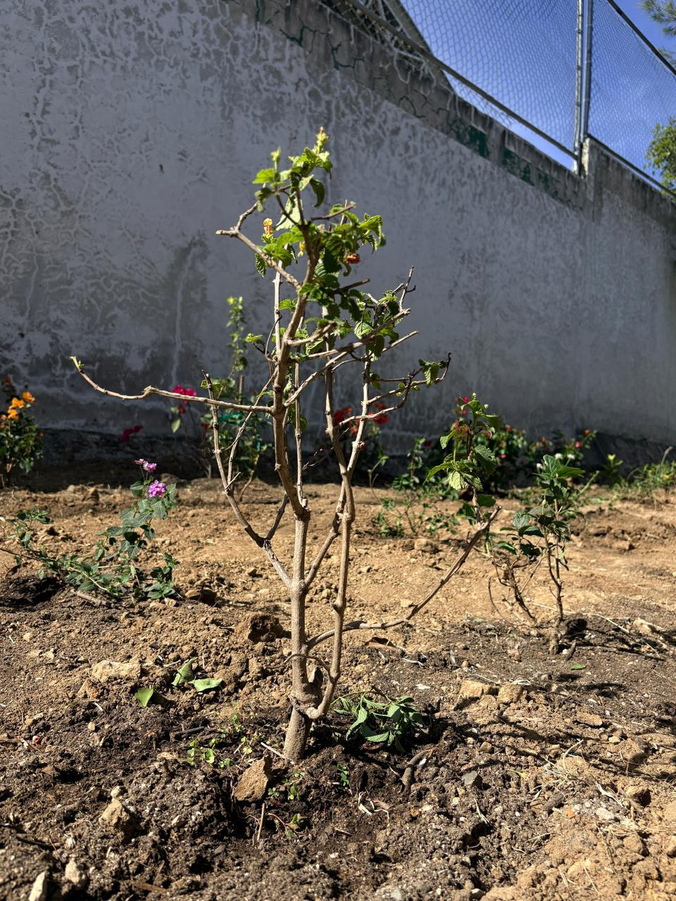
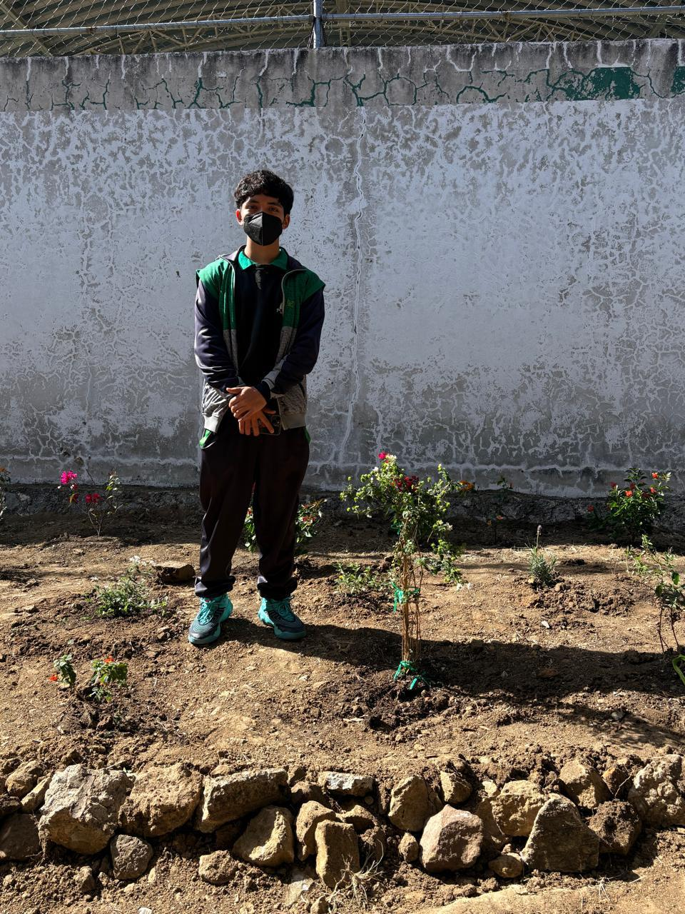

Un espacio para proteger la naturaleza y la biodiversidad
Es un espacio donde se cultivan plantas y flores que proporcionan alimento y refugio a animales polinizadores como abejas, mariposas, colibríes y otros insectos.


Algunas plantas que podemos utilizar son:

Conoce algunos ejemplos de jardines y polinizadores.



Escucha nuestro podcast y aprende más sobre la importancia de cuidar a los polinizadores.
Podcast: La importancia de los jardines polinizadores.
Este espacio está dedicado a mostrar las actividades, avances y fotografías de nuestro proyecto escolar.

